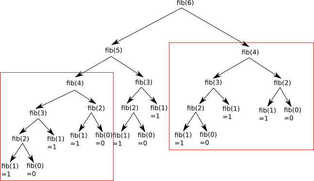

Cours
1) Suite de Fibonacci
Dans le chapitre sur la récursivité, nous avons étudié la programmation de la suite de Fibonacci :
def fib(n) :
if n < 2 :
return n
else :
return fib(n-1)+fib(n-2)
Pour n=6, il est possible d'illustrer le fonctionnement de ce programme avec le schéma ci-dessous :

Vous pouvez constater que l'on a une structure arborescente (typique dans les algorithmes récursifs), si on additionne toutes les feuilles de cette structure arborescente (fib(1)=1 et fib(0)=0), on retrouve bien 8.
En observant attentivement le schéma ci-dessus, vous avez remarqué que de nombreux calculs sont inutiles, car effectué 2 fois : par exemple on retrouve le calcul de fib(4) à 2 endroits (en haut à droite et un peu plus bas à gauche) :

On pourrait donc grandement simplifier le calcul en calculant une fois pour toutes fib(4), en "mémorisant" le résultat et en le réutilisant quand nécessaire :
def fib_mem(n):
mem = [0]*(n+1) #permet de créer un tableau contenant n+1 zéro
return fib_mem_c(n,mem)
def fib_mem_c(n,m):
if n==0 or n==1:
m[n]=n
return n
elif m[n]>0:
return m[n]
else:
m[n]=fib_mem_c(n-1,m) + fib_mem_c(n-2,m)
return m[n]
Nous pouvons résumer ce programme comme suit :
- si la valeur de fib(a) n'a jamais été calculée (si la valeur de fib(a) n'est pas encore dans le tableau mem), elle est calculée, puis ensuite elle est stockée dans le tableau mem
- si la valeur de fib(a) a déjà été calculée (si la valeur de fib(a) est déjà dans le tableau mem), nous n'avons aucun calcul à faire, on utilise juste la valeur présente dans le tableau.
Dans le cas qui nous intéresse, on peut légitimement s'interroger sur le bénéfice de cette opération de "mémorisation", mais pour des valeurs de n beaucoup plus élevées, la question ne se pose même pas, le gain en termes de performance (temps de calcul) est évident. Pour des valeurs n très élevées, dans le cas du programme récursif "classique" (n'utilisant pas la "mémorisation"), on peut même se retrouver avec un programme qui "plante" à cause du trop grand nombre d'appels récursifs.
En réfléchissant un peu sur le cas que nous venons de traiter, nous divisons un problème "complexe" (calcul de fib(6)) en une multitude de petits problèmes faciles à résoudre (fib(0) et fib(1)), puis nous utilisons les résultats obtenus pour les "petits problèmes" pour résoudre le problème "complexe". Cela devrait vous rappeler la méthode "diviser pour régner" !
En faite, ce n'est pas tout à fait cela puisque dans le cas de la méthode "diviser pour régner", la "mémorisation" des calculs n'est pas prévue. La méthode que nous venons d'utiliser se nomme "programmation dynamique".
2) Programmation dynamique
a) introduction
Comme nous venons de le voir, la programmation dynamique, comme la méthode diviser pour régner, résout des problèmes en combinant des solutions de sous-problèmes. Cette méthode a été introduite au début des années 1950 par Richard Bellman.
Il est important de bien comprendre que "programmation" dans "programmation dynamique", ne doit pas s'entendre comme "utilisation d'un langage de programmation", mais comme synonyme de planification et ordonnancement.
La programmation dynamique s'applique généralement aux problèmes d'optimisation. Nous avons déjà évoqué les problèmes d'optimisation lorsque nous avons étudié les algorithmes gloutons l'année dernière. N'hésitez pas, si nécessaire à vous replonger dans ce cours.
Comme déjà évoqué plus haut, à la différence de la méthode diviser pour régner, la programmation dynamique s'applique quand les sous-problèmes se recoupent, c'est-à-dire lorsque les sous-problèmes ont des problèmes communs (dans le cas du calcul de fib(6) on doit calculer 2 fois fib(4). Pour calculer fib(4), on doit calculer 4 fois fib(2)...). Un algorithme de programmation dynamique résout chaque sous-sous-problème une seule fois et mémorise sa réponse dans un tableau, évitant ainsi le recalcul de la solution chaque fois qu'il résout chaque sous-sous-problème.
b) Programmation dynamique et rendu de monnaie
Nous allons maintenant travailler sur un problème d'optimisation déjà rencontré l'année dernière : le problème du rendu de monnaie.
Petit rappel : vous avez à votre disposition un nombre illimité de pièces de 2 cts, 5 cts, 10 cts, 50 cts et 1 euro (100 cts). Vous devez rendre une certaine somme (rendu de monnaie). Le problème est le suivant : "Quel est le nombre minimum de pièces qui doivent être utilisées pour rendre la monnaie"
La résolution "gloutonne" de ce problème peut être la suivante :
- on prend la pièce qui a la plus grande valeur (il faut que la valeur de cette pièce soit inférieure ou égale à la somme restant à rendre)
- on recommence l'opération ci-dessus jusqu'au moment où la somme à rendre est égale à zéro.
Prenons un exemple :
Partons du principe que nous avons 1 euro 77 cts à rendre :
-
on utilise une pièce de 1 euro (plus grande valeur de pièce inférieure à 1,77 euro), il reste 77 cts à rendre
-
on utilise une pièce de 50 cts (plus grande valeur de pièce inférieure à 0,77 euro), il reste 27 cts à rendre
-
on utilise une pièce de 10 cts (plus grande valeur de pièce inférieure à 0,27 euro), il reste 17 cts à rendre
-
on utilise une pièce de 10 cts (plus grande valeur de pièce inférieure à 0,17 euro), il reste 7 cts à rendre
-
on utilise une pièce de 5 cts (plus grande valeur de pièce inférieure à 0,07 euro), il reste 2 cts à rendre
-
on utilise une pièce de 2 cts (plus grande valeur de pièce inférieure à 0,02 euro), il reste 0 cts à rendre
L'algorithme se termine en renvoyant 6 (on a dû rendre 6 pièces)
Que se passe-t-il si nous avons à rendre 11 centimes ?
On utilise une pièce de 10 cts (plus grande valeur de pièce inférieure à 11 centimes), il reste 1 cts à rendre, il n'y a pas de pièce de 1 cts => l'algorithme est "bloqué"
Cet exemple marque une caractéristique importante des algorithmes gloutons : une fois qu'une "décision" a été prise, on ne revient pas "en arrière" (on a choisi la pièce de 10 cts, même si cela nous conduit dans une "impasse").
Rappel : dans certains cas, un algorithme glouton trouvera une solution, mais cette dernière ne sera pas "une des meilleures solutions possible" (une solution optimale).
Évidemment, le fait que notre algorithme glouton ne soit pas "capable" de trouver une solution ne signifie pas qu'il n'existe pas de solution...en effet, il suffit de prendre 1 pièce de 5 cts et 3 pièces de 2 cts pour arriver à 11 cts. Recherchons un algorithme qui nous permettrait de trouver une solution optimale, quelle que soit la situation.
Afin de mettre au point un algorithme, essayons de trouver une relation de récurrence :
Soit X la somme à rendre, on notera Nb(X) le nombre minimum de pièces à rendre. Nous allons nous poser la question suivante : Si je suis capable de rendre X avec Nb(X) pièces, quelle somme suis-je capable de rendre avec 1+Nb(X) pièces ?
Si j'ai à ma disposition la liste de pièces suivante : p1, p2, p3, ..., pn et que je suis capable de rendre X cts, je suis donc aussi capable de rendre :
- X−p1
- X−p2
- X−p3
- ...
- X−pn
(à condition que pi (avec i compris entre 1 et n) soit inférieure ou égale à la somme restant à rendre)
Exemple : si je suis capable de rendre 72 cts et que j'ai à ma disposition des pièces de 2 cts, 5 cts, 10 cts, 50 cts et 1 euro, je peux aussi rendre :
- 72 - 2 = 70 cts
- 72 - 5 = 67 cts
- 72 - 10 = 62 cts
- 72 - 50 = 22 cts
Je ne peux pas utiliser de pièce de 1 euro.
Autrement dit, si Nb(X−pi) (avec i compris entre 1 et n) est le nombre minimal de pièces à rendre pour le montant X−pi, alors Nb(X)=1+Nb(X−pi) est le nombre minimal de pièces à rendre pour un montant X. Nous avons donc la formule de récurrence suivante :
- si X=0 : Nb(X)=0
- si X>0 : Nb(X)=1+min(Nb(X−pi)) avec 1≤i<n et pi≤X
Le "min" présent dans la formule de récurrence exprime le fait que le nombre de pièces à rendre pour une somme X−pi doit être le plus petit possible.
Étudions le programme suivant :
def rendu_monnaie_rec(P,X):
if X==0:
return 0
else:
mini = 1000
for i in range(len(P)):
if P[i]<=X:
nb = 1 + rendu_monnaie_rec(P,X-P[i])
if nb<mini:
mini = nb
return mini
La fonction rendu_monnaie_rec prend en paramètre un tableau de pièces (P) et la somme à rendre (X). Elle renvoie le plus petit nombre de pièces possible. On retrouve la relation de récurrence définie juste au-dessus.
Pour être sûr de renvoyer le plus petit nombre de pièces, on attribue dans un premier temps la valeur 1000 à la variable mini (cette valeur 1000 est arbitraire, il faut juste une valeur suffisamment grande : on peut partir du principe que nous ne rencontrerons jamais de cas où il faudra rendre plus de 1000 pièces), ensuite, à chaque appel récursif, on "sauvegarde" le plus petit nombre de pièces dans cette variable mini.
Exemple : si on teste cette fonction en tapant rendu_monnaie_rec((2,5,10,50,100),1 1) dans la console Python, on obtient 4 (on doit utiliser au minimum 4 pièces pour rendre 11 cts)
Essayons de comprendre plus en détail comment le programme ci-dessous détermine ce résultat.
Étudions cet arbre :
Plusieurs remarques s'imposent :
-
comme vous pouvez le remarquer sur le schéma, tous les cas possibles sont "traités" (quand un algorithme "traite" tous les cas possibles, on parle souvent de méthode "brute force").
-
pour certains cas, on se retrouve dans une "impasse" (cas où on termine par un "1"), dans cette situation, la fonction renvoie "1000" ce qui permet de s'assurer que cette "solution" (qui n'en est pas une) ne sera pas "retenue".
-
la profondeur minimum de l'arbre (avec une feuille 0) est de 4, la solution au problème est donc 4 (il existe plusieurs parcours : (5,2,2,2), (2,5,2,2)... qui donne à chaque fois 4)
Si maintenant on tente d'exécuter la même fonction avec une valeur à rendre beaucoup plus grande (par exemple 171 cts), le programme plante ! Pourquoi ? Parce que les appels récursifs sont trop nombreux, on dépasse la capacité de la pile.
La programmation dynamique va nous permettre de résoudre ce problème.
Comme vous avez peut-être déjà dû le remarquer, même dans le cas simple évoqué ci-dessus (11 cts à rendre), nous faisons plusieurs fois exactement le même calcul. Par exemple on retrouve 2 fois la branche qui part de "4" :

Il va donc être possible d'appliquer la même méthode que pour Fibonacci.
À noter que dans des cas plus "difficiles à traiter" comme 171 cts, on va retrouver de nombreuses fois exactement les mêmes calculs, il est donc potentiellement intéressant d'utiliser la programmation dynamique.
Voici donc notre programme de calcul de rendu de monnaie modifiée :
def rendu_monnaie_mem(P,X):
mem = [0]*(X+1)
return rendu_monnaie_mem_c(P,X,mem)
def rendu_monnaie_mem_c(P,X,m):
if X==0:
return 0
elif m[X]>0:
return m[X]
else:
mini = 1000
for i in range(len(P)):
if P[i]<=X:
nb=1+rendu_monnaie_mem_c(P,X-P[i],m)
if nb<mini:
mini = nb
m[X] = mini
return mini
Si maintenant nous testons ce programme en tapant dans la console Python rendu_monnaie_mem((2,5,10,50,100),171), tout fonctionne parfaitement, il suffit d'une fraction de seconde pour obtenir le résultat qui est 7.